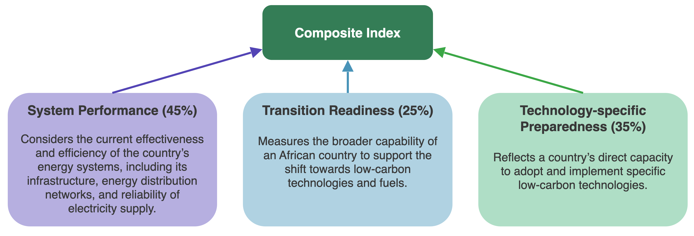
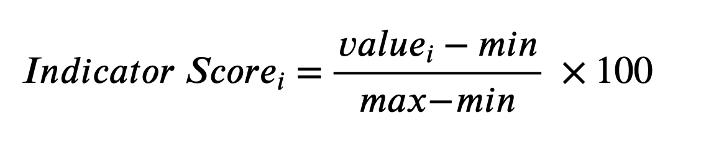

Please click the right arrow for Methodology and Formula Page.
Each Composite Index in this map is calculated using a weighted combination of three core dimensions as shown in the diagram
Together, these three components form a composite score between 0 and 100, where higher scores indicate greater readiness or performance.
Each indicator is normalized using the formula:
This method ensures all indicators are directly comparable across countries and categories.
** Please note that only Nigeria has a real index value. The index values for the other six countries are fictional. **
ABOUT:
This web map visualizes a Composite Index to support the transition to low-carbon energy in Africa, highlighting key challenges like policy gaps, infrastructure, and renewable resource availability. Designed for African governments, investors, and NGOs, it is part of the Energy and Climate Innovation (ECI) Africa Program at CATF, which aims to drive sector transformation, improve energy access, and promote sustainability.
Initially focusing on Nigeria as a pilot, the map will expand across all 54 African countries as more data becomes available. The Composite Index, developed by Karen Pan and Gwladys Boukpessi with CATF’s ECI Africa Program, evaluates energy transition readiness based on three dimensions: System Performance (45%), Transition Readiness (25%), and Technology-Specific Preparedness (35%).
Map created by: Elena Anishchenko and Zoe Li for GGR472 UofT 2025